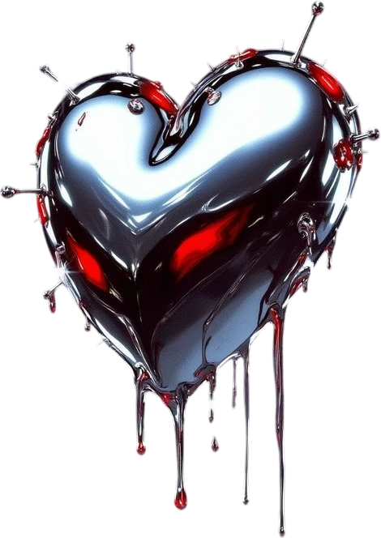
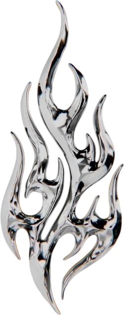
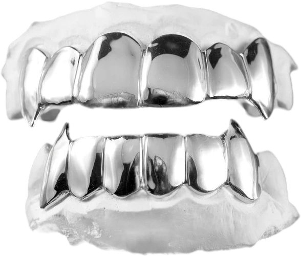
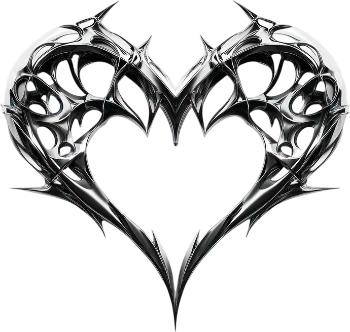
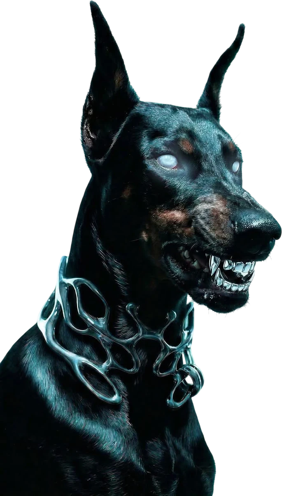

1400°
the kiln
Everything melts in here eventually, hearts included. It hums all night. The dogs sleep next to it.
open now
milano 00:00
01 — who bites
Two pairs of hands, two dobermanns and a kiln that never really cools down.
MORSO started in a basement with a jar of dental wax and a dog that wouldn't stop chewing the furniture. We made her a muzzle with spikes. Somebody asked for one as a choker. Then somebody asked for teeth.
Everything is still made here, by hand, one piece at a time. No catalogue in a warehouse, no plating, no plastic. If you can't see the file marks, look closer: they're there on purpose.
02 — the bench
01 / 05

1400°
Everything melts in here eventually, hearts included. It hums all night. The dogs sleep next to it.

×38
A flame starts as a block of silver. Thirty-eight files later, it burns. Every thorn goes through nine of them.

2 kg
Two kilos of dental wax a month, most of it in the shape of other people's teeth, until it turns into silver.

1
Its frame is a heart made of thorns. You try the piece on, you look, you decide. It has never lied.

2
Ossa and Morso. Security, quality control, emotional support. The muzzles were the first thing we ever made.
03 — so far
morso — via dei denti 13
04 — visit
Fittings and impressions by appointment. Ring the bell twice, the dogs will tell us you're here.
M1 Porta Venezia, then six minutes on foot. Look for the door with the teeth on it.
book a fitting →05 — overheard in the atelier